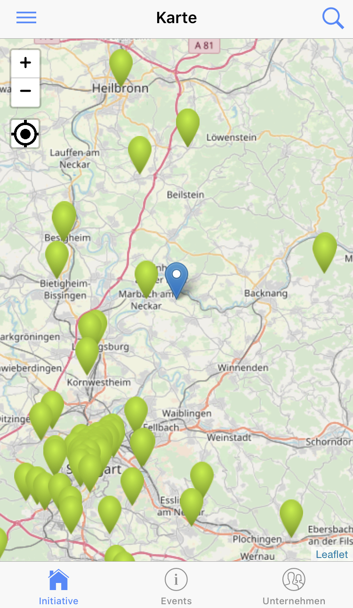
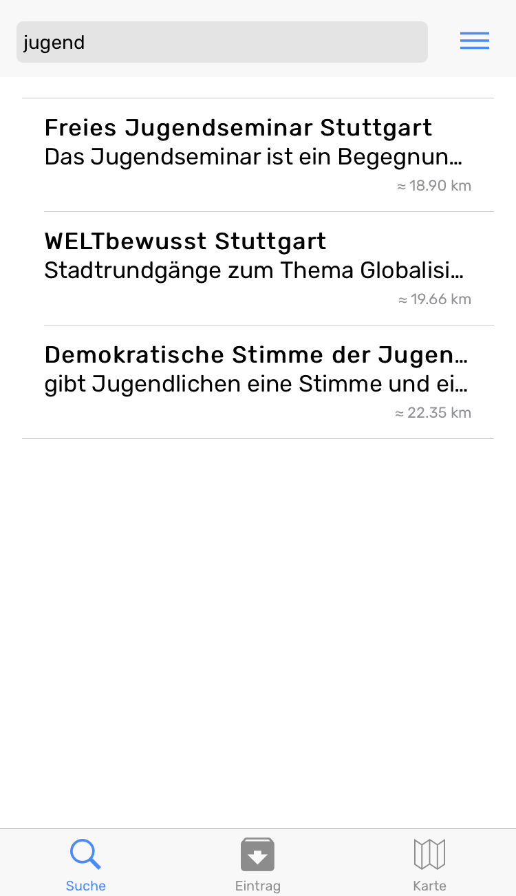
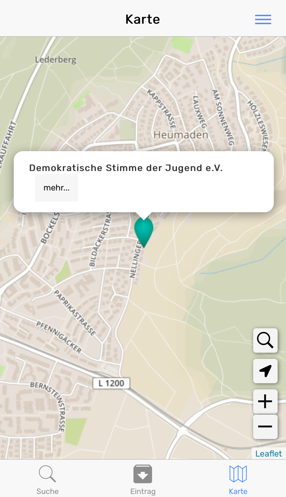
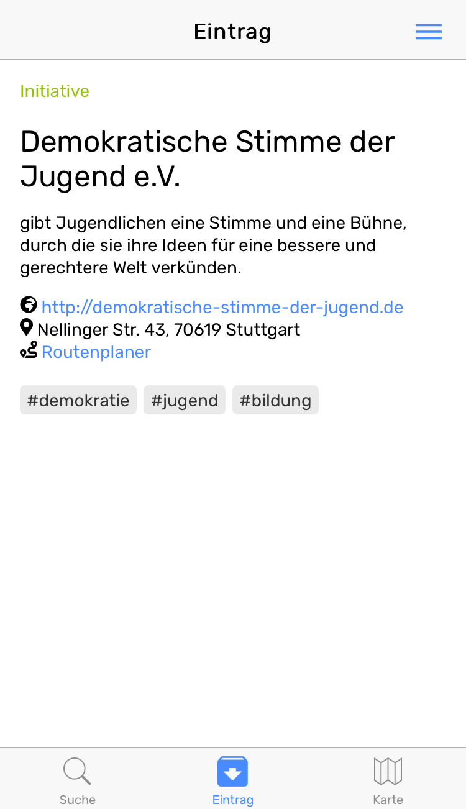
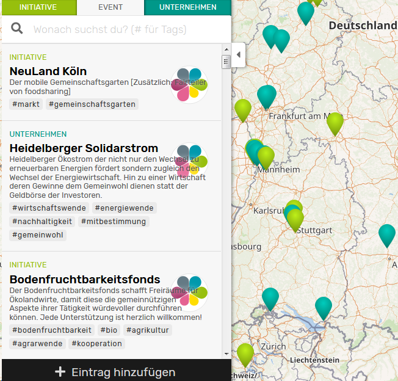

Herzlich Willkommen bei der App zur Karte von morgen!Hier findest du die Einträge rund um deinen Standort.

Alle Einträge können durchsucht werden.

Durch Klick auf den Marker erfährst du den Namen des Eintrags.

Durch einen klick auf den Titel siehst du alle Details.

Online unter Kartevonmorgen.org kannst du Einträge hinzufügen, bearbeiten und bewerten.
